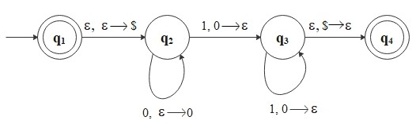

A context-free grammar is a 4-tuple \((V, \Sigma, R, S)\);Any language that can be generated by some context-free grammar is called a context-free language (CFL).
- \(V\) is a finite set called the variables.
- \(\Sigma\) is a finite set disjoint from \(V\), called the terminals.
- \(R\) is a finite set of rules, with each rule being a variable and a string of variables and terminals.
- \(S \in V\) is the start variable.
Example: \[ \begin{align*} &X \to 00X1 \, | \, Y01 \\\\ &Y \to $ \end{align*} \] In this grammar, \(V = \{X, Y\}, \, \Sigma = \{0, 1, $\}, \, S = X\), and \(R\) is the collection of above rules.In general, context-free grammars are more powerful than regular expressions when describing languages. For example, CFG can describe recursive structures. Consider the language \[ L_1 = \{0^n 1^n \, | \, n \geq 0\} \] This is a nonregular language. To prove a language is not regular, we use the pumping Lemma.
For example, this grammar generates the string \(0000$0111\). The derivation of the string in this grammar is \[ X \Rightarrow 00X1 \Rightarrow 0000X11 \Rightarrow 0000Y0111 \Rightarrow 0000$0111. \] Note: \( X \to 00X1 \, | \, Y01\) means \( X \to 00X1\) OR \(X \to Y01\).
Pumping Lemma: If \(L\) is a regular language, then there exists \(p \in \mathbb{N}\) where if amy string \(s \in L\) of length at least \(p\), then \(s\) may be divided into three pieces, \(s = xyz\), satisfying the following conditionsFor example, assume \(L_1\) is regular. Choose \(s\) to be the string \(0^p1^p\), where \(p\) is the pumping length. Then \(s\) must be split into three pieces, \(s = xyz\), where for any \(i \geq 0\) the string \(xy^iz \in L_1\). If we pump \(y\), the number of \(0\)s and \(1\)s become unequal, producing a string not in \(L_1\). (Check when \(y\) consists only of \(0\)s, only of \(1\)s, or of both \(0\)s & \(1\)s). Thus, by contradiction, \(L_1\) is not regular.Note: \(p\) is called the pumping length,
- \(\forall i \geq 0, \, xy^i z \in L\)
- \(|y| > 0\)
- \(|xy| \leq p\)
However, we can represent \(L_1\) by the context-free grammar: \[ s \to 0s1 \, | \, \epsilon. \] (e.g. \(s \Rightarrow 0s1 \Rightarrow 00s11 \Rightarrow 0011\))
Here, we introduce a new type of computational model.Back to Home
A pushdown automaton is a 6-tuple \((Q, \Sigma, \Gamma, \delta, q_0, F)\) wherePushdown Automata(PDAs) are similar to the nondeterministic finite automata (NFAs), but have an extra component called a stack, which allows pushdown automata recognize some nonregular languages.
- \(Q\) is a finite set of states,
- \(\Sigma\) is a finite set of the input alphabet,
- \(\Gamma\) is a finite set of the stack alphabet,
- \(\delta: Q \times \Sigma_{\epsilon} \times \Gamma_{\epsilon} \to \mathcal{P}(Q \times \Gamma_{\epsilon})\) is the transition function,
- \(q_0 \in Q\) is the start state,
- \(F \subseteq Q\) is the set of accept states.
Again, consider the language: \[ L_1 = \{0^n 1^n \, | \, n \geq 0\}. \] The PDA, \(M_1\) reads symbols from the input string as follows:Let's build the state diagram for \(M_1\) that recognizes \(L_1\). \[ \begin{align*} &Q = \{q_1, q_2, q_3, q_4\} \\\\ &\Sigma = \{0, 1\} \\\\ &\Gamma = \{0, $\} \\\\ &F = \{q_1, q_4\} \end{align*} \]
- As each \(0\) is read, pushes it onto the stack.
- After reading the sequence of \(0\)s, pops a \(0\) off the stack for each \(1\) is read.
- If reading the string is finished exactly when the stack becomes empty, accepts the string, otherwise rejects the input.
CFGs and Pushdown Automata are equivalent: A language is context-free if and only if some pushdown automaton recognizes it.